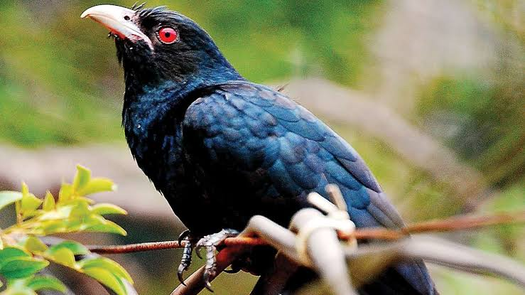

Koel
Birds
The true koels, Eudynamys, are a genus of cuckoos from Asia, Australia and the Pacific. They are large sexually dimorphic cuckoos that eat fruits and insects and have loud distinctive calls. They are brood parasites, laying their eggs in the nests of other species.
Scientific name: Eudynamys
Class: Aves
Phylum: Chordata
Order: Cuckoos
Rank: Genus
Higher classification: Cuckoos
Biology of Koel
Taxonomy
A molecular genetic study by Sorenson and Payne (2005) found that the closest relative of Eudynamys is the dwarf koel (Microdynamis parva), and beyond that the thick-billed cuckoo (Pachycoccyx audeberti).
They found that the long-tailed cuckoo (Urodynamis taitensis) of New Zealand and the Pacific, which had earlier been placed in Eudynamys as E.
taitensis and sometimes called the long-tailed koel, was more distantly related, along with other members of the tribe Cuculini, including the white-crowned cuckoo (Cacomantis leucolophus), also known as the white-crowned koel.
However, not all the evidence for the relationships was very strong and further research was required.
Species
The taxonomy of the common koel complex is difficult and remains a matter of dispute, with some only recognizing a single species (common koel, Eudynamys scolopaceus, with melanorhynchus and orientalis as subspecies),
two species (common koel, Eudynamys scolopaceus, with orientalis as a subspecies, and black-billed koel, Eudynamys melanorhynchus) or three species (as done below).
Sexual Dimorphism
The female koel's plumage is banded and speckled in shades of brown. The evolutionary function is to camouflage her approach to her host's nest and enable her brood parasitism to go undetected.
Noisy miner and wattle birds have been observed feeding their fledglings. The male's sexually dimorphic plumage is black, like a raven.
They are of a similar size to ravens and are known to have territories that overlap with ravens. They have also been observed being mobbed by noisy minors and wattle birds in the same way as ravens (egg predators) are.
The male koel may be a raven mimic enabling the female to approach the host's nest, either deliberately or opportunistically, while the host flock is engaged in (distracted) mobbing the male.